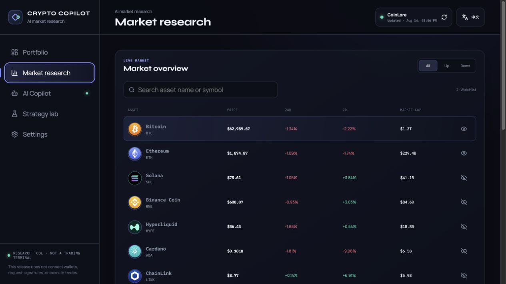
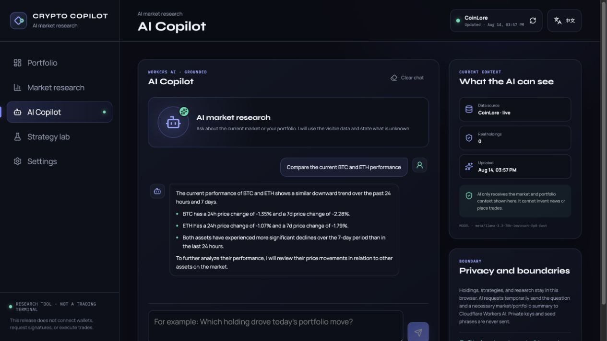
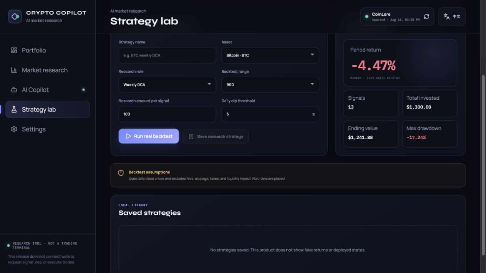

Evidence before advice
Market and portfolio answers use the exact context visible in the workspace.
LIVE PRODUCT · AI × MARKET RESEARCH
A bilingual AI market-research workspace grounded in live data—not a trading terminal.

The first version looked like an automated trading platform, but its portfolio, returns, and wallet state were demonstrations. Shipping it meant narrowing the scope and making the remaining loop real.
If an AI finance product cannot tell you where a number came from—or what it does not know—the interface is only performing confidence.
Market and portfolio answers use the exact context visible in the workspace.
The product helps inspect, compare, and test; it never connects a wallet or places an order.
No invented news, silent mock fallback, fake returns, or “deployed” strategy states.
Four connected workspaces turn a price feed into a research routine without pretending to be an exchange.
CoinLore powers the current overview while historical daily candles support 7, 30, and 90-day charts. Normalized comparison makes two different price scales legible.

Each request sends only the question and the necessary market or portfolio summary to Cloudflare Workers AI. The interface shows what the model can see before the user asks.

The strategy lab tests weekly DCA, daily-dip, and seven-day moving-average breakout rules against real Kraken daily candles.
The screenshot intentionally keeps the negative result. The product reports what happened in the selected period; it does not manufacture proof.
Current overview and daily OHLC history.
Validation, normalization, caching, and safe upstream fallbacks.
Market, portfolio, AI, strategy, and bilingual UI.
Bounded AI requests; holdings and research remain local.
Trust did not come from adding more AI. It came from removing claims the product could not yet support.
Removing wallet and execution flows made the research loop clearer and the privacy story defensible.
Showing source freshness and “what the AI can see” turns a backend constraint into user confidence.
Negative backtests, missing context, and provider errors stay visible instead of becoming polished fiction.